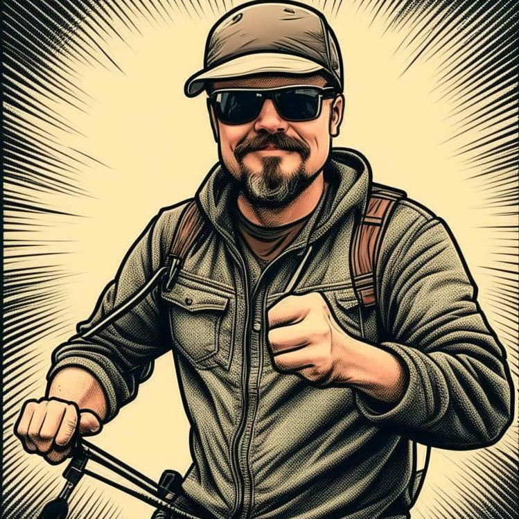

Веломастерская ВЕЛОBRO – это не просто магазин или обслуживание двухколесной техники.
Мы профессиональная команда единомышленников, которые увлечены велосипедом во всех его проявлениях. Мы знаем все про велосипед не из журналов и YouTube, а в первую очередь из собственного многолетнего опыта. Мы используем велосипед как транспорт круглый год, участвуем в соревнованиях, ходим в велосипедные походы. Наша компания создана действительно увлеченными людьми, энтузиастами и фанатами различных видов и стилей катания на велосипеде. Поэтому мы прекрасно понимаем, как важно для любителей велопрогулок получать своевременную помощь по самому разнообразному кругу вопросов, связанных с содержанием, обслуживанием и ремонтом велосипедов. Причём желательно, чтобы эту помощь можно было получить в одном месте. Для этого мы и создали веломастерскую, предлагающую комплексное и всестороннее решение всех задач, которые только могут возникнуть у владельцев двухколёсной техники – от консультации по выбору при покупке или любому другому вопросу до помощи при сборке кастомного велосипеда по индивидуальному проекту. Сотрудники нашей веломастерской – квалифицированные специалисты, по-настоящему увлеченные своим делом – с удовольствием и в самые сжатые сроки помогут Вам в решении любого, даже самого сложного и нестандартного вопроса.
Наши мастера

Олег
Велосипедный мастер, специализирующийся на спицовке колес, обладает высоким уровнем мастерства и опыта в этой области. Он способен произвести качественную сборку и настройку колес для любого типа велосипеда, от шоссейных и горных до городских и BMX. Все его работы отличаются высоким качеством и вниманием к деталям, что делает его надежным партнером для любого велосипедиста, стремящегося к безопасности и комфорту во время катания.
Андрей
Велосипедный мастер - профессионал с многолетним опытом. Он специализируется на работах по ремонту и настройке велосипедов, имеет доступ к современному оборудованию. Готов выполнить любые работы по настройке и ремонту велосипедов.

Никанор
Специализируется на выполнении самых сложных и тонких работ по ремонту и настройке велосипедов, включая переборку воздушных вилок, амортизаторов, кареток и прокачку гидравлики. Его многолетний опыт и уникальные навыки позволяют ему эффективно диагностировать проблемы и проводить сложные ремонтные работы.
Мы на карте
Время работы: ПН-ПТ 9:00 - 19:00 СБ,ВС 9:00 - 18:00